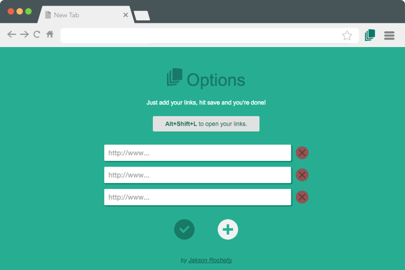

Multlinks Shortcut
Open your daily pages at once.
It's really easy to setup Multilinks Shortcut:
- Right-click on the icon (top-left corner) then options
- Type your links and hit save settings
- Ready to use!

It's really easy to setup Multilinks Shortcut: